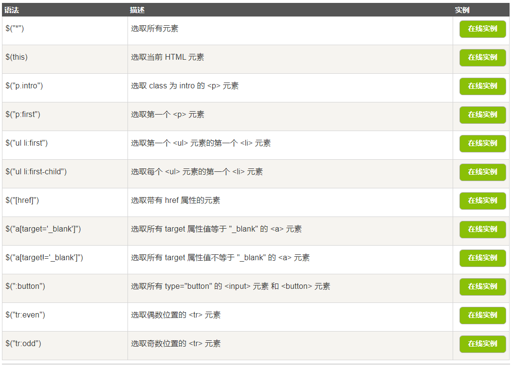

点击标签试一试！！
1.文档就绪事件：
jquery函数需要位于document ready函数中，
这是为了防止文档在完全加载（就绪）之前运行 jQuery 代码，
即在 DOM 加载完成后才可以对 DOM 进行操作。
如果在文档没有完全加载之前就运行函数，操作可能失败。
也可以采用简洁写法：
$(function(){
// 开始写 jQuery 代码...
});
2.选择器使用方法

3.jQuery事件
- 鼠标事件
click:单击
dbclick:双击
mouseenter：指针穿过元素
mouseleave：指针离开元素
mousedown：当鼠标指针移动到元素上方，并按下鼠标按键时，会发生 mousedown 事件
mouseup：当在元素上松开鼠标按钮时，会发生 mouseup 事件
hover：当鼠标移动到元素上时，会触发指定的第一个函数(mouseenter);当鼠标移出这个元素时，会触发指定的第二个函数(mouseleave)
- 键盘事件
输入： 按键次数：0
keydown - 键按下的过程
keypress - 键被按下,类似keydown，但不会触发所有的键（比如 ALT、CTRL、SHIFT、ESC）
keyup - 键被松开